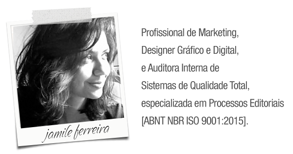
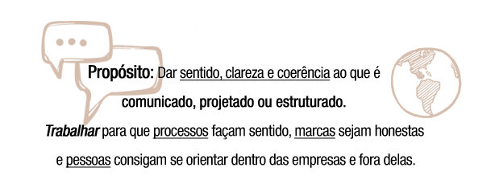
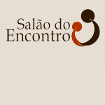
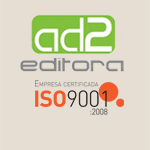
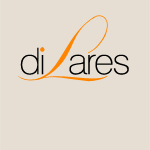
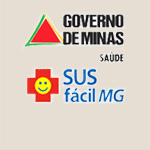
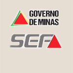
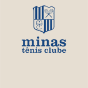
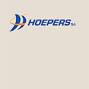
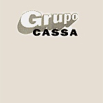

Percurso Profissional


Minha trajetória reúne experiência em design gráfico, processos de qualidade, produtos têxteis e materiais instrucionais, com olhar atento ao detalhe, à coerência estética e à clareza funcional. No release a seguir, evidencio os caminhos, projetos e competências que estruturam minha atuação profissional.
"Mineira de Belo Horizonte, da safra de 1976, desenvolvo peças publicitárias desde 1994. Iniciei meus trabalhos de diagramação elaborando apostilas e livros da área de vendas e consultoria empresarial. Possuo trabalhos nas áreas de comunicação negocial, treinamento profissional, reforma administrativa e processos editoriais.
De 1994 a 2000, fui responsável pela coordenação de programas de treinamento e desenvolvimento focado em atendimento ao cliente interno e externo. Como analista de negócios, desenvolvi planos para captação de recursos públicos e privados e projeto de informatização de setor de atendimento, nos anos de 2001 e 2002. Em 2002, passei também a escrever matérias e crônicas para jornais e websites.
Em 2006, reformulei a capa de um dos livros infantis da "Collana Uerè", lançado em Veneza (Itália) pela The Open City International Foundation, em parceria com o governo italiano. Em Patos de Minas/MG, de 2005 a 2009, fui diagramadora e colaboradora da "Revista Mais", nas seções cultura, comportamento, música e literatura, e também colaboradora do projeto de concertos seriados de música erudita "Terra Sem Sombra", com o desenvolvimento do website e divulgação virtual.
De volta à Belo Horizonte em 2010, atuei como controller de procedimentos para desenvolvimento de produtos editoriais impressos e digitais, promovendo a manutenção da certificação ABNT NBR ISO 9001:2008, da AD2 Editora. Após esse período, trabalhei na Regional Leste da Prefeitura Municipal de Belo Horizonte, no setor de eventos e posteriormente no setor de finanças.
Em 2016, no Rio de Janeiro, junto à presidente da Fundação Internacional The Open City, participei como Diretora de Arte da 3ª edição do Volume I do livro infantil "Ueré e a Floresta Atlântica", lançado em 6 idiomas: português, inglês, espanhol, francês, italiano e alemão, comercializado também digitalmente. Atuei na ONG "Serviço Assistencial Salão do Encontro", em Betim/MG.
Em 2017, através da Universidade Federal de Minas Gerais (UFMG), participei do projeto de pesquisa "Acadêmicas", da Academia Mineira de Letras como pesquisadora voluntária. Em 2018, lançei o e-book "Kaffee und Kuchen - Olhares Revisitados sobre a Literatura de Língua Alemã", uma coletânea de textos e imagens produzidos por alunos do 1º semestre da disciplina "Seminário de Leitura: Literatura Estrangeira", do curso de bacharelado em Letras, Língua Moderna Alemã.
Concomitantemente, realizei estudos em Italiano e Francês, na UFMG, até 2020, e em Árabe Egípcio - nível introdutório, em ensino particular, com o professor Hossam Mohammed, e Japonês - nível introdutório, pela Andifes (Associação Nacional dos Dirigentes das Instituições Federais de Ensino Superior). Em 2021, ingressei no curso de Letras - bacharelado em Português/Alemão, na Universidade Federal do Rio de Janeiro - UFRJ, na modalidade virtual, em razão da pandemia.
Atuei no marketing da Viamundi Escola de Idiomas, em Belo Horizonte. Desenvolvi nova versão para website, redes sociais e desenvolvi programas de divulgação, em 2017 e 2018, com atualizações em 2020.
Atuei junto à "Laura Mendes, Arte & Design", colaborando na composição da comunicação de arte, moda, acessórios e estampas.
Dei suporte em estruturas digitais à poetisa mineira "Elizabeth Gontijo", e desenvolvi também estrutura de comunicação digital para o Evento "Re-Habitar na Poesia", de Laura Mendes, Elizabeth Gontijo e Inês Antonini, na cidade de Ouro Preto, em setembro de 2022.
Em 2022, criei a loja virtual Toi et Moi Presentes & Design, por meio de um programa do SENAC Minas voltado ao incentivo ao empreendedorismo.
Artes digitais para Paróquia Santa Efigênia dos Militares, em Belo Horizonte, foram criadas de outubro de 2022 a abril de 2023. Comunicação, desenvolvimento de artes digitais e gráficas, e atuação e implementação da Pastoral da Comunicação da Paróquia Santa Luzia, Bairro Cidade Nova - Belo Horizonte foram desenvolvidos de maio de 2023 a fevereiro de 2024.
Cumpri estudo básico sobre Curadoria de Arte, pelo Centro de Formação Artística e Tecnológica (CEFART) da Fundação Clóvis Salgado (Palácio das Artes), em 2024.
Atuei em 2025 na CSA Sport, indústria de uniformes esportivos e corporativos, como Designer Gráfico Sênior, desenvolvendo a composição de uniformes e catálogos de produtos. No mesmo período, elaborei materiais voltados à Qualidade Total, incluindo o protótipo de POPs (Procedimentos Operacionais Padrão) da Área de Criação e Arte.
Atualmente, estou cursando uma nova graduação — Licenciatura em Artes — e uma pós-graduação Lato Sensu em Docência no Ensino Superior, ambas pela Faculdade de Administração, Humanas e Exatas (FAHE), com conclusão prevista para o final de 2027.
E inicio em agosto o curso livre, nível básico de Expografia, pelo Centro de Formação Artística e Tecnológica (CEFART) da Fundação Clóvis Salgado (Palácio das Artes), previsão de conclusão em dezembro de 2026, com a 18ª Mostra CHAMA, exposição de obras de novos artistas visuais - PQNA Galeria, Palácio das Artes - Belo Horizonte/MG.
No momento, atuo como designer gráfico freelancer e estou à frente do projeto, de âmbito pessoal, chamado "Atlas Cidade Nova", de geografia urbana afetiva, sobre toponímia do bairro Cidade Nova, em Belo Horizonte/MG. Desenvolvo plano de comunicação para a exposição "Re-Habitar II", de Laura Mendes, Inês Antonini e Bebeth Gontijo, na cidade de Ouro Preto, prevista para outubro de 2026.
Experiência Profissional
MEI, pessoa jurídica |
Área: Consultoria, Treinamento e Design Desenvolvimento de e-book instrucional sobre os temas: Merchandising Visual, Trade Marketing e material catequético sobre Anos Litúrgicos, Micro-contos católicos e Reflexões & Práticas de Fé. Criação de marca, website e bases de redes sociais da arquivista Gisele M. Arcanjo. |
CSA Confecções Ltda |
Área: Design Criação de uniformes esportivos e corporativos para os clientes da empresa. Desenvolvimento de catálogos: geral e por nicho de mercado. Protótipo de Procedimentos Operacionais Padrão (POPs) para setor de criação e design. |
| atuação como freelancer |
Área: Criação Editorial e Publicitária, Gestão Administrativa Comunicação, desenvolvimento de artes digitais e gráficas, e atuação e implementação da Pastoral da Comunicação (PASCOM) da Paróquia Santa Luzia, Bairro Cidade Nova - Belo Horizonte, de maio de 2023 a fevereiro de 2024. Artes gráficas e digitais para Paróquia Santa Efigênia dos Militares, em Belo Horizonte, de outubro de 2022 a abril de 2023. Redesign das redes sociais de Elizabeth Gontijo, poetisa mineira. Desenvolvimento da marca, website e instagram do Evento Re-Habitar na Poesia, de Laura Mendes, Elizabeth Gontijo e Inês Antonini, em Ouro Preto/MG em 24 e 25 de Setembro de 2022. Desenvolvimento do E-commerce "Toi et Moi Presentes e Design"; empreendimento divulgado pela TV SENAC, através do Programa de Gratuidade SENAC. Criação de marca, desenvolvimento do website e das redes sociais de Laura Mendes - Arte. Desenvolvimento de estampas para produção de moda e acessórios. Desenvolvimento de ações de divulgação da Viamundi Idiomas e Traduções Ltda, incluindo novo website, dinamização das redes sociais, peças para divulgação, organização de workshops e contato com empresas, universidades e colégios para parceria. Desenvolvimento de peças publicitárias e editorais, impressas e online para The OpenCity International Foundation Inc, e desenvolvimento da 3ª edição do Volume 1 do livro infantil "Ueré e a Floresta Atlântica", lançado em 6 idiomas: português, inglês, espanhol, francês, italiano e alemão, comercializado via Amazon.com, Inc. Criação de marca, desenvolvimento do website e das redes sociais da Sétima Cred. |
|
SASFRA Serviço Assistencial
 |
Área: Administração |
| Prefeitura de Belo Horizonte, Regional Leste |
Área: Instituição do Governo Municipal |
| AD2 Editora Ltda  |
Área: Editora de Revistas, Livros e Desenvolvedora de Aplicativos Web |
| Tulipe Noire Comunicação Ltda |
Área: Agência de Publicidade e Marketing |
| diLares
Soluções Profissionais Ltda  |
Área: Bureau de Criação Publicitária e Soluções em Internet |
| Secretariade Estado de Saúde de MG SES/MG  |
Área: Instituição Pública do Estado |
| Secretaria de Estado de Fazenda de MG SEF/MG  |
Área: Instituição Pública do Estado |
| Minas
Tênis Clube  |
Área: Clube
Esportivo |
| Grupo
Hoepers  |
Área: Recuperadora
de Crédito |
| Resultar Empreendimentos Ltda |
Área: Consultoria
e Treinamento Profissional |
| Grupo
Cassa  |
Área: Consultoria
e Treinamento Profissional |
Atividades Extras
Treinamento de procedimentos de suporte amplo via Call Center da Unimed BH, pela AeC Contatos S/A, em preparo para Setor de Qualidade Total, em junho e julho de 2025. |
|
Colaboradora da The Open City International Foundation Inc., de 2006 a 2009, e de 2014 a 2016. |
|
Suplente no Conselho Gestor Participativo do Complexo Esportivo Saudade e Mariano de Abreu, em prol de melhorias na infraestrutura, junto à Prefeitura Municipal de Belo Horizonte, de fevereiro de 2014 a janeiro de 2017. Apoiadora do Vereador Pelé do Volei. |
|
Gravação de jingles e spots para empresas como BH Shopping, Tálamo Agência de Comunicação e Urban Cave Cds, além de jingles políticos [Deputado Irani Barbosa e Deputado Geraldo Paz]. Digitação e elaboração de projetos profissionais [relatório de visitas a grupos de terceira idade para a Campanha Política do Vereador Sérgio Ferrara, em 2004, BH] e trabalhos científicos e acadêmicos [monografias]. |
|
Participação como modelo do casting da Black Agency [representing Elite Models] e Megazoom Produções [representing Mega Models], em Belo Horizonte, 1994 e 1995. |
|
Elaboração de Palestras e Cursos sobre Etiqueta Social e Profissional, Conceitos da Comunicação Profissional e Atendimento Profissional. |
|
Aplicação da POF 2008, Pesquisa de Orçamento Doméstico, pelo IBGE, na área rural e urbana da cidade de Paracatu, em junho de 2008. |
|
Trabalhos temporários em empresas como Microlins (ensino - assessoria em pedagogia, 2005), Livraria Leitura (comércio - atendimento ao público, 2004), NipoBrasileira (indústria - assessoria em marketing, 2004) e Back Pack (comércio celular - atendimento ao público, 1997). |
Desenvolvimento de Projeto de Lei: "Proposta de Política Pública para Inclusão do Diagnóstico de Altas Habilidades/Superdotação no Sistema Único de Saúde (SUS)" - 2025/2026, aguardando retorno de contatos políticos. |
|
Desenvolvimento do E-book "Kaffee und Kuchen: olhares revisitados sobre a literatura alemã", com textos em português, inglês e alemão, fotografias e ilustrações de alunos da disciplina "Seminário de Leitura, Língua Estrangeira", primeiro semestre de 2018, da UFMG. O volume 1 foi lançado em agosto de 2018. |
|
Pesquisadora voluntária na Academia Mineira de Letras, para projeto de exposição sobre a Vida e Obra das Mulheres Acadêmicas de Minas Gerais, Henriqueta Lisboa, Alaíde Lisboa, Yeda Bernis, Elizabeth Rennó, Carmen Schneider, Lacyr Schetino e Maria José de Queiroz, 2017. |
|
Desenvolvimento do projeto "Ball in Play", para divulgar o esporte e levar esperança e conceitos positivos às crianças em unidades socioeducativas, e em situação de vulnerabilidade. Participante da Associação Academia de Rua, esporte como base para desenvolvimento social, de janeiro a maio de 2014, com o desenvolvimento de marca e projetos "12 horas mix" - evento de esportes radicais. |
|
Participação e criação de marca do grupo "Acolhida do Chá", da Igreja Santa Efigênia dos Militares, em Belo Horizonte - atendimento fraterno ao público geral, realizado nas dependências da igreja, em 2017. Acompanhamento de atividades de prestação de serviços à comunidade, aplicadas aos réus em processos judicais penais, em entidade de assistência social, Salão do Encontro, Betim/MG. Planejamento de evento beneficente “Scream!” de combate à AIDS - Belo Horizonte, 1996. Colaboradora do projeto social Casulo Missões Urbanas em 2006, na cidade de Patos de Minas/MG. |
|
Desenvolvimento do Website do projeto Terra Sem Sombra, Coral Vozes, de 2007 a 2009, e Sérgio Cunha (Barítono e Regente) e do Curso "A Voz no Topo da Performance, da Dra. Sílvia Pinho, do Instituto INVOZ, em 2008. Integrante da equipe de avaliadores das apresentações de deficientes físicos e mentais para seleção da "3ª Jornada da Inclusão: Vitória pela Arte", de realização e coordenação de "Marcos Frota Circo Show ", em 2008. |
|
Participação no 11° volume da "Antologia de Contos de Autores Contemporâneos", pela Câmara Brasileira de Jovens Escritores, com o conto "Uma avenida no inverno", lançado em Setembro de 2005. |